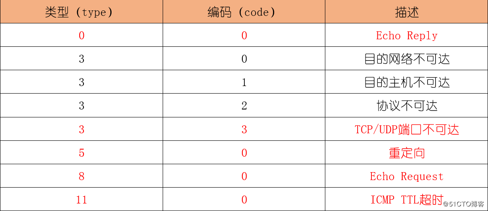

ICMP: Internet Control Message Protocol是网络层的一个重要协议
ICMP的作用：用来在网络设备间传递各种差错和控制信息，它对于收集各种网络信息、诊断和排除各种网络故障具有至关重要的作用
ICMP协议中用到的报文类型：Echo-Request和Echo-Reply 两种报文 使用的都是单播报文
ICMP错误报告
ICMP定义了各种错误消息，用于诊断网络连接性问题；根据这些错误消息，源设备可以判断出数据传输失败的原因。
比如，如果网络中发生了环路，导致报文在网络中循环，最终TTL超时，这种情况下网络设备会发送TTL超时消息给发送端设备。
又比如如果目的不可达，则中间的网络设备会发送目的不可达消息给发送端设备。
小结：

注意：ICMP定义了多种消息类型，用于不同的场景
有些消息不需要Code字段来描述具体类型参数，仅用Type字段表示消息类型。
有些ICMP消息使用Type字段定义消息大类，用Code字段表示消息的具体类型。
典型应用
ping应用
Ping是检测网络连通性的常用工具，同时也能够收集其他相关信息
选项:
-t Ping 指定的主机，直到停止。
若要查看统计信息并继续操作，请键入 Ctrl+Break；
若要停止，请键入 Ctrl+C。
-a 将地址解析为主机名。
-n count 要发送的回显请求数。
-l size 发送缓冲区大小。
-f 在数据包中设置“不分段”标记(仅适用于 IPv4)。
-i TTL 生存时间。
-v TOS 服务类型(仅适用于 IPv4。该设置已被弃用，
对 IP 标头中的服务类型字段没有任何
影响)。
-r count 记录计数跃点的路由(仅适用于 IPv4)。
-s count 计数跃点的时间戳(仅适用于 IPv4)。
-j host-list 与主机列表一起使用的松散源路由(仅适用于 IPv4)。
-k host-list 与主机列表一起使用的严格源路由(仅适用于 IPv4)。
-w timeout 等待每次回复的超时时间(毫秒)。
-R 同样使用路由标头测试反向路由(仅适用于 IPv6)。
根据 RFC 5095，已弃用此路由标头。
如果使用此标头，某些系统可能丢弃
回显请求。
-S srcaddr 要使用的源地址。
-c compartment 路由隔离舱标识符。
-p Ping Hyper-V 网络虚拟化提供程序地址。
-4 强制使用 IPv4。
-6 强制使用 IPv6。
TRACERT应用
Tracert是检测网络丢包及时延的有效手段，同时可以帮助管理员发现网络中的路由环路
选项:
-d 不将地址解析成主机名。
-h maximum_hops 搜索目标的最大跃点数。
-j host-list 与主机列表一起的松散源路由(仅适用于 IPv4)。
-w timeout 等待每个回复的超时时间(以毫秒为单位)。
-R 跟踪往返行程路径(仅适用于 IPv6)。
-S srcaddr 要使用的源地址(仅适用于 IPv6)。
-4 强制使用 IPv4。
-6 强制使用 IPv6。